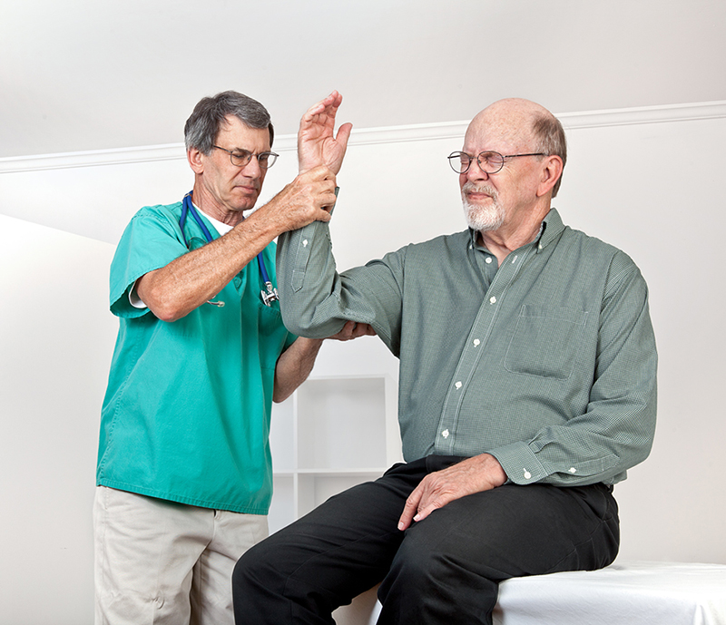

Soul Health é uma companhia de mais de 125 anos que se dedica a
entregar Saúde Integral para seus mais de 7 milhões de clientes por
meio de produtos e serviços de Saúde, Odonto, Vida, Previdência e
Investimentos.
A companhia tem como missão melhorar a vida das pessoas, oferecendo
apoio, segurança e autonomia em cada momento e decisão de saúde
física, emocional e financeira.
Para isso, conta com mais de 4 mil colaboradores engajados e
comprometidos, além de uma rede de distribuição com milhares de
corretores de seguros em todo o Brasil.
Uma coisa nós sabemos sobre Saúde Integral, ela é o resultado do
tempo, das oportunidades e das escolhas que fazemos todos os dias.
Assim também é a sustentabilidade. Ela não nasce do dia para noite.
De forma estratégica, a Soul Health iniciou sua jornada de
integração da sustentabilidade há mais de dez anos. Faz parte dos
nossos princípios contribuir de maneira positiva para a sociedade e
o meio ambiente. Porém, sabemos que o melhor jeito de prever o
futuro, criando serviços e soluções que atendam ele, é construindo-o
dia após dia.
Por isso, nossa tomada de decisão sempre passa pela
sustentabilidade. Fazemos negócios com responsabilidade e
acreditamos no desenvolvimento para melhorar o mundo em que vivemos.
Nossa atuação é orientada por compromissos públicos assumidos como
os Princípios para o Investimento Responsável (PRI), os Princípios
para Sustentabilidade em Seguros (PSI) e o Pacto Global, iniciativas
suportadas pela ONU. Também adotamos diversas medidas frente à
pandemia de coronavírus - veja em português e em inglês.

Ortopedia Geriátrica
A cada ano, aproximadamente 30 a 40% dos idosos caem pelo
menos uma vez, e as consequências negativas extrapolam o
aspecto físico, sendo também psíquicas e sociais.
Ao contrário do que muitos imaginam, prevenir quedas não se
trata apenas de proporcionar um ambiente seguro, amplo,
iluminado e com barras de apoio.

Neurologia Infantil
A Neurologia Infantil, também conhecida como neuropediatria, é
a especialidade que avalia o sistema nervoso central (cérebro,
cerebelo e tronco encefálico) e periférico (nervos) das
crianças.
É o neurologista infantil que acompanha o desenvolvimento
neurológico das crianças, através de exame clínico minucioso e
análise das aquisições motoras, cognitivas e de linguagem ao
longo do tempo, permitindo diagnosticar e tratar doenças.